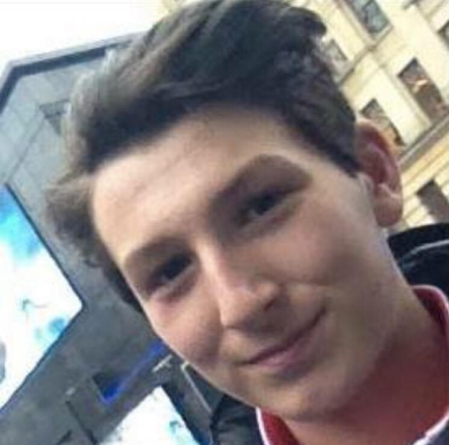
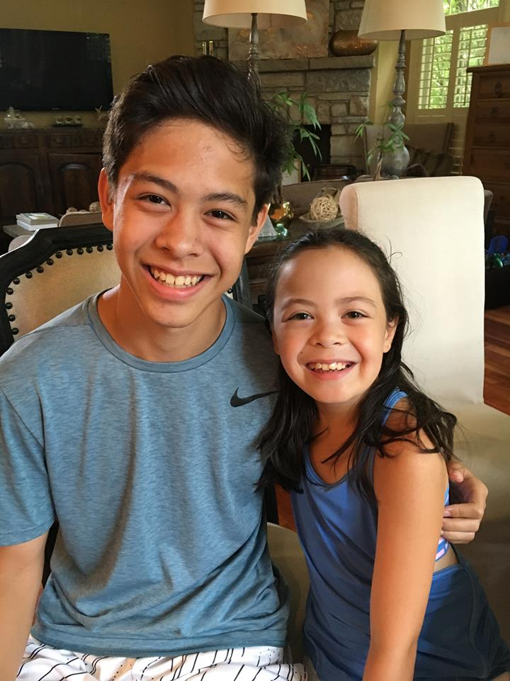

Your Junior Officers
President: Giuseppe Di Cera
Ciao! Giuseppe Di Cera is the 10th grade STUCO President. It is both his honor and pleasure to serve the students of the tenth grade. He truly enjoys being part of a club like STUCO, which focuses on effectively communicating and solving problems regarding the interests of the school's students. In addition to STUCO, he is also involved at school with clubs like Red Cross and UNICEF. Outside of school, his hobbies are playing soccer and writing.
Vice President: Michael Wayne
Michael Wayne is Student Council's Vice President for the class of 2020. He runs for Ladue's cross country team in the fall (which he loves), and he also plays tennis and squash. His interests include painting, world politics, and classic rock.